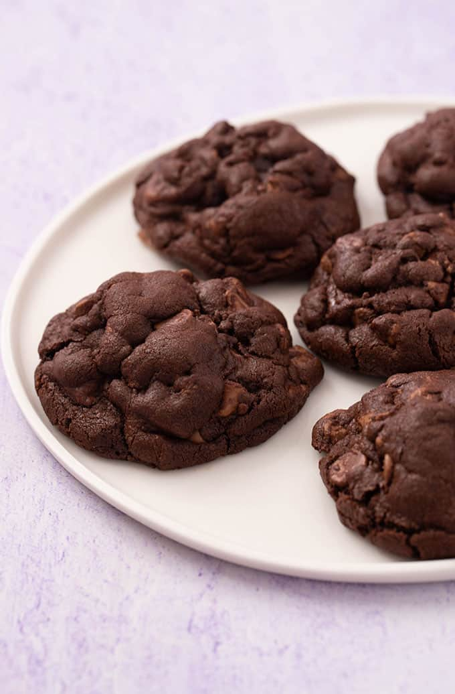

Cookies

Description
A basic, easy to remember reicpe for cookies
Ingredients
- 250g butter
- 350g light soft brown sugar
- 2 large eggs
- 350g self-raising flour
- 100g cocoa powder
- 200g chocolate chips
Steps
- Beat the butter and sugar together with an optional pinch of sea salt in a bowl until light and fluffy, then beat in the eggs one at a time. Sift over the flour and cocoa powder and beat into the butter mix, then fold through the chocolate chips. The mix can be made up to 2 days ahead and chilled or frozen for a month, or used straight away.
- To bake, heat oven to 190C/170C fan/gas 5. If the mix is at room temperature, place evenly spaced spoonfuls on parchment-lined baking sheets, allowing 2 tbsp for each cookie. If the mix is fridge cold, you can roll it into 40g balls before baking. The balls can be frozen and the biscuits baked from frozen, but they'll need a few minutes more. Bake for 12-15 mins until spread out and crusty around the outside. Leave to cool slightly and enjoy warm, or leave to cool completely and eat cold. The biscuits will keep in a tin for three days.
- As an optional extra, the biscuits can be dipped in chocolate. To do this, melt your chosen type of chocolate in a bowl over a pan of simmering water or in the microwave. Leave to cool a little, then dip half of each biscuit in the chocolate and leave them on parchment-lined trays somewhere cool to set. Again, the dipped biscuits will keep for up to three days in a tin or lidded plastic container.